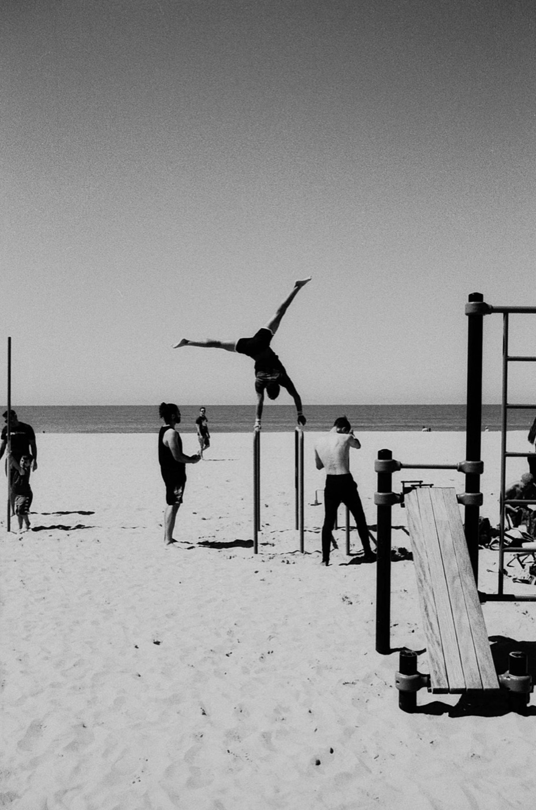
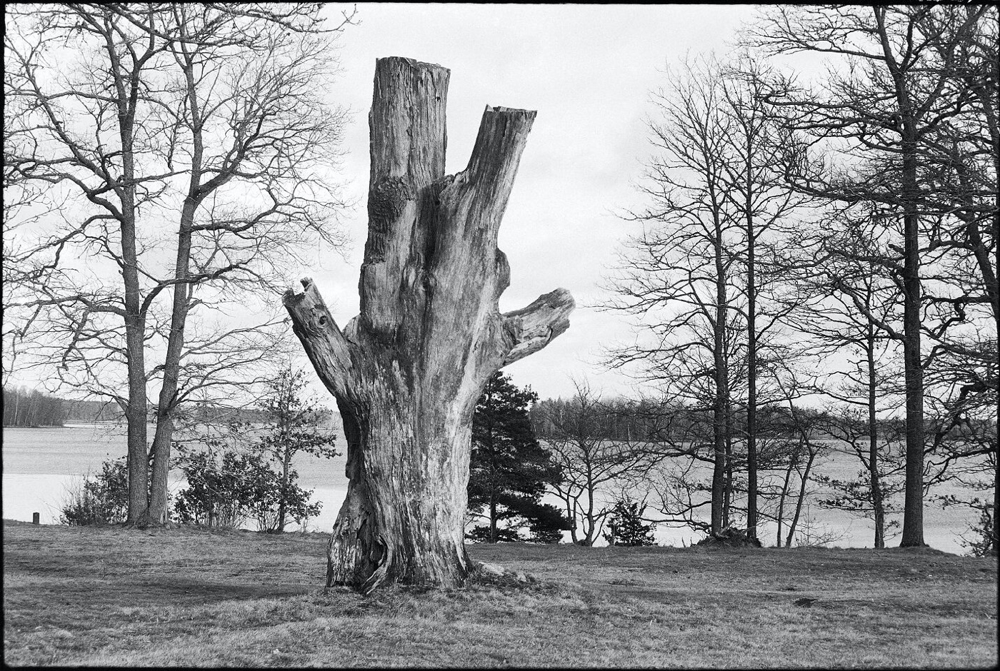

胶片拍完怎么冲？多少钱、怎么选店、别被坑
很多人以为按完快门就完事了。不是——拍完只是走了一半。 剩下那一半叫「冲扫」，而且它才是最容易花冤枉钱的地方。
同一卷底片，换家店扫，差价能到 3 倍；送错工艺，甚至可能直接把片子冲废。这篇不讲玄学，只讲怎么不花冤枉钱。
一、先搞清「工艺」——送错会毁片
不同胶卷要用不同药水，这叫「工艺」。这是送冲前第一件必须确认的事：
一句话：下单前先问「你们做不做我这个工艺」。答不上来的，换一家。

二、「冲、扫、印」是三笔钱，别被套餐绕晕
新手最容易在这里被绕：冲（显影）、扫（扫描）、印（出照片）是三件事，三笔钱。
按公开行情，国内大致是这样（会随时间与城市波动，仅供参考）：
③ 印：洗成实体照片。除非你要送人或挂墙，否则先别加——数码文件在手，随时能印。
省钱的关键判断：如果你只是发朋友圈/小红书，快扫完全够用；只有要打印、放大、参赛才值得上精扫。别为了一堆你用不到的大文件多掏钱。
三、分辨率：够用就好，别被数字吓住
商家爱用「高清」「超清」「专业扫描」这类词。你只需要问一句：长边多少像素？
顺便说一个老玩家常讲的观察：同一卷底片，不同店扫出来的差别，往往比换一款胶卷还大。 所以预算有限时，优先把钱花在扫描上，而不是花在更贵的卷上。

四、下单前必问的 5 个问题（建议截图）
这 5 条问完，你基本不会被坑。能耐心回答的店，水平通常也不会太差。
五、想更省？黑白最适合自己冲
如果你一年能拍上 20 卷，自己冲黑白的边际成本非常低：
决策很简单：拍得少（一年十几卷以内）→ 送店，省时间；拍得多 → 黑白自冲，一年能把器材钱省回来。
同一卷底片，换个地方扫，能差出一个滤镜的距离。
评论区聊聊
你第一次送冲扫花了多少钱、踩过什么坑？留言报个价和城市，让后面的人心里有个底。
数据来源
价格区间参考公开报道与电商在售冲扫套餐（什么值得买 2026 年行情文章、淘宝冲扫套餐报价）；自冲成本参考社区实测（含海外玩家单卷药水成本与国内自冲教程）。冲扫价格随城市、店铺与工艺波动较大，本文数字仅供参照，请以下单时报价为准。
这几卷最适合自冲／送冲
XP2 Super（C-41 可送普通店） HP5 Plus（黑白自冲首选） Fomapan 100 Classic（便宜练手） Kentmere 400（平价） Double-X 5222（电影卷 · 需 ECN-2）
去胶卷库看看这几卷
「胶卷档案」是一个可搜索的胶卷资料库：每卷都有规格、特性、使用感受、参考价与实拍样片。搜品牌或型号就能直达。